规定初始像素覆盖已通过独立数据验收，完整12步与物理安全未通过。Prescribed initial pixel coverage passes the independent DATA audit; full12-step and physical acceptance remain incomplete. Original1280×720; no edits/crop. Every image below is INITIAL, not micro1/final.
{"seed": 3, "proposal_id": 2199, "global_id": 32919, "family": 3}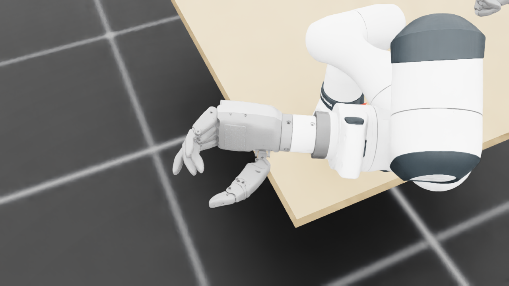
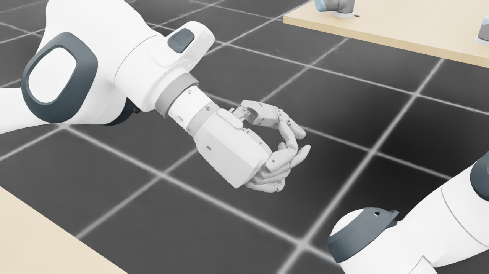
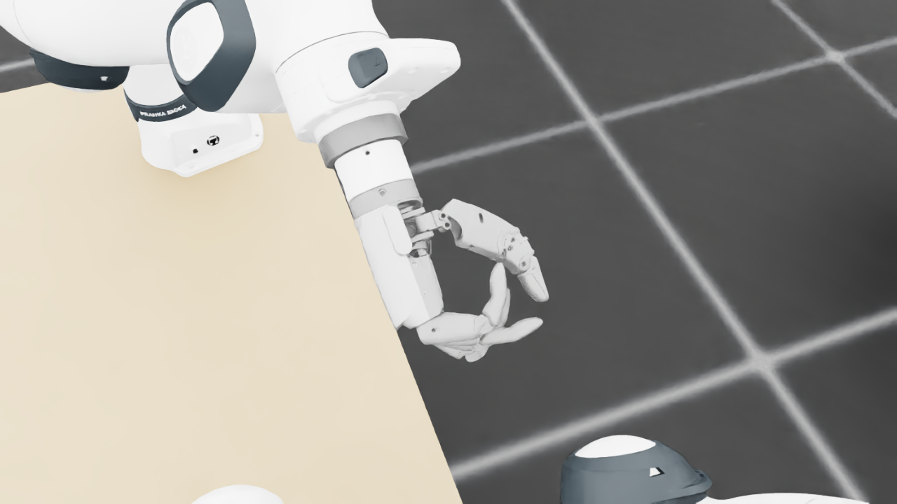
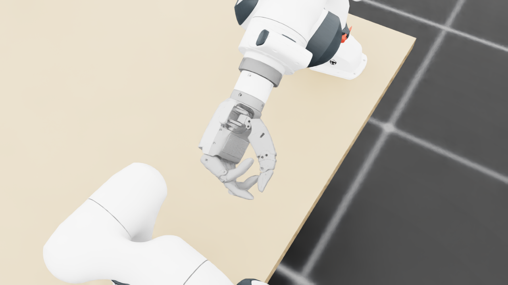
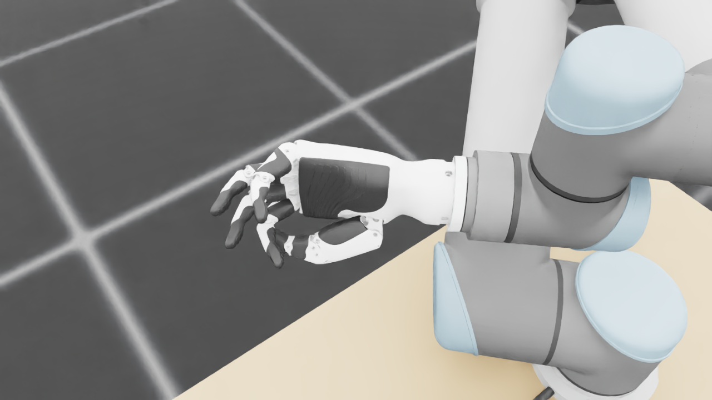
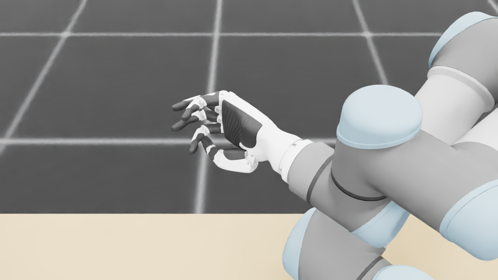
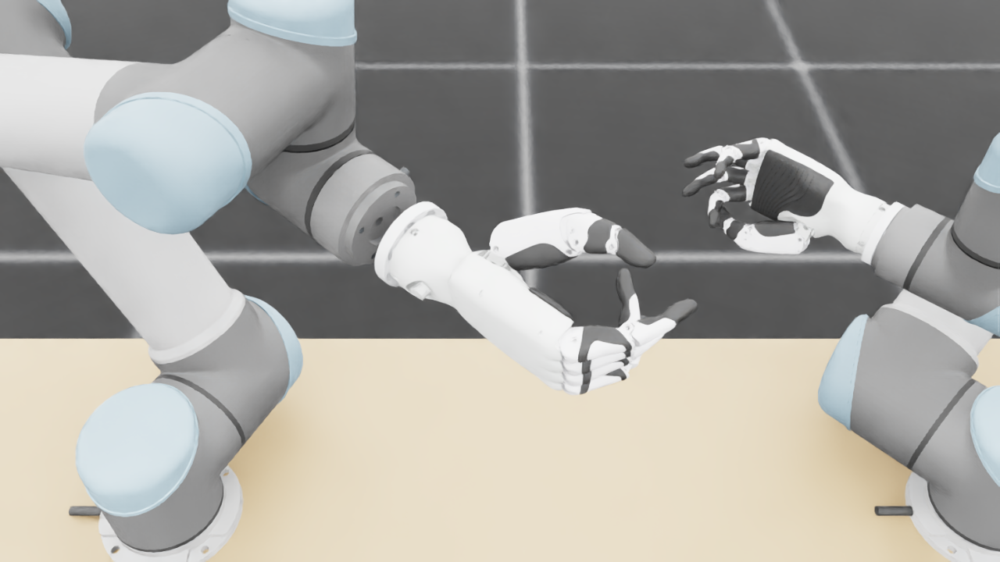
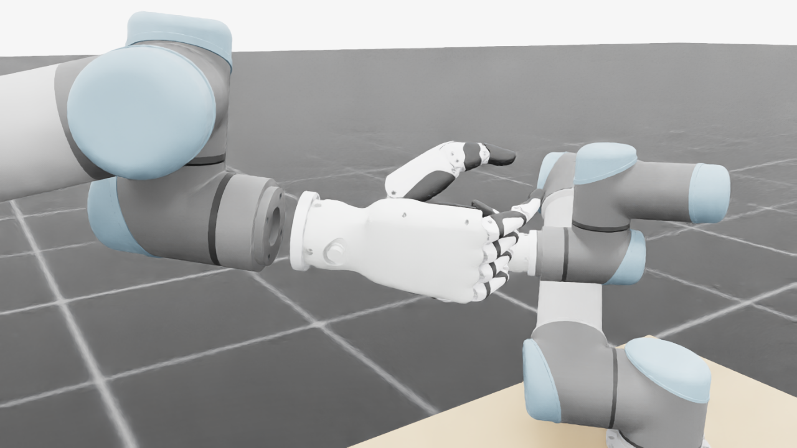
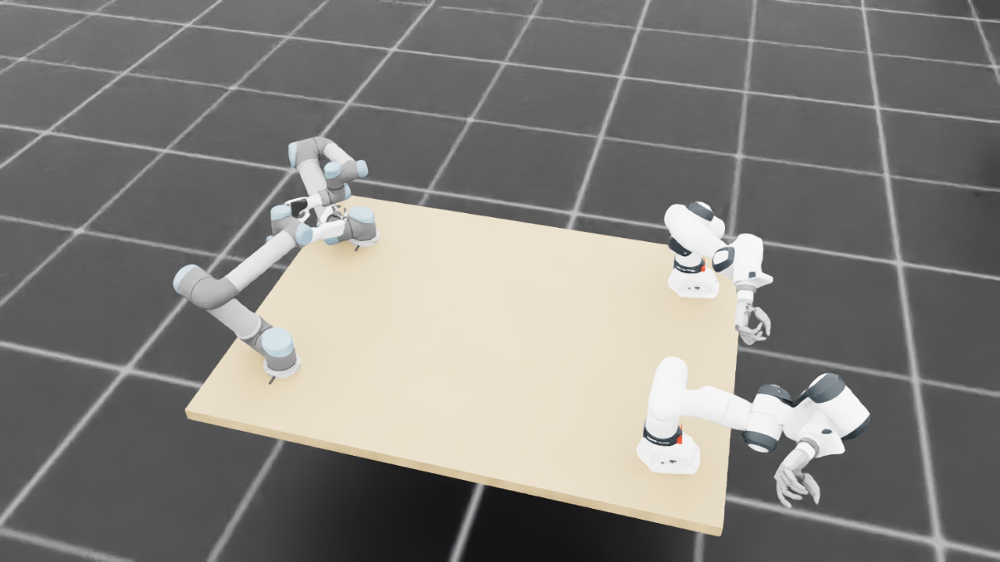
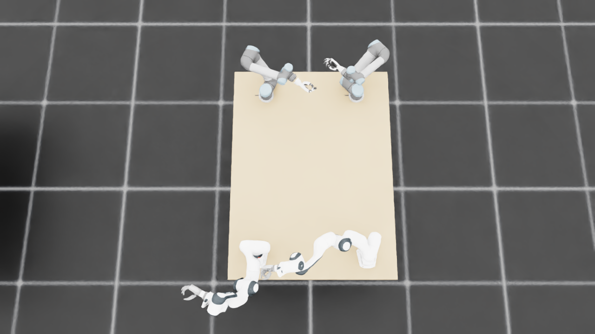
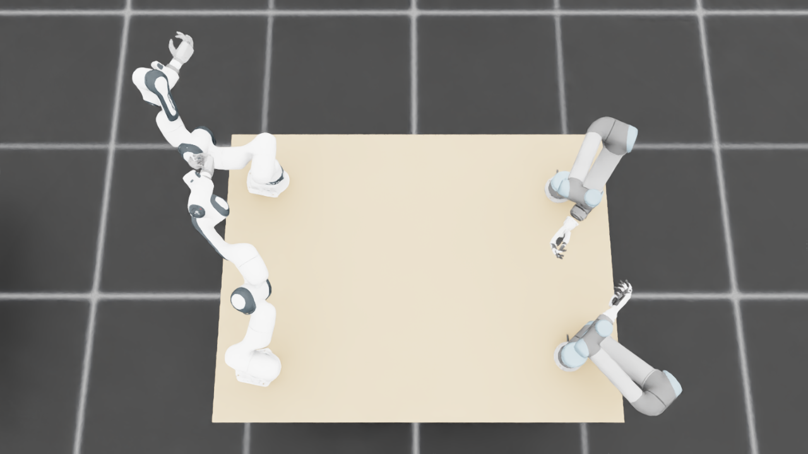
{
"qualified": true,
"arms": {
"F_L": {
"qualified": true,
"palm_visual_peak_pixels": 30520,
"finger_family_peak_pixels": {
"thumb": 9165,
"index": 2389,
"middle": 2582,
"ring": 2465,
"little": 5853
},
"per_native_body_peak_pixels": {
"/World/envs/env_31/F_L/f2_hand/left_hand_base": 38462,
"/World/envs/env_31/F_L/f2_hand/left_index_1": 1215,
"/World/envs/env_31/F_L/f2_hand/left_middle_1": 1733,
"/World/envs/env_31/F_L/f2_hand/left_pinky_1": 3858,
"/World/envs/env_31/F_L/f2_hand/left_ring_1": 925,
"/World/envs/env_31/F_L/f2_hand/left_thumb_1": 536,
"/World/envs/env_31/F_L/f2_hand/left_index_2": 1197,
"/World/envs/env_31/F_L/f2_hand/left_middle_2": 1123,
"/World/envs/env_31/F_L/f2_hand/left_pinky_2": 1995,
"/World/envs/env_31/F_L/f2_hand/left_ring_2": 1749,
"/World/envs/env_31/F_L/f2_hand/left_thumb_2": 5160,
"/World/envs/env_31/F_L/f2_hand/left_thumb_3": 1952,
"/World/envs/env_31/F_L/f2_hand/left_thumb_4": 1978
},
"native_body_visibility_gaps": [],
"all_native_hand_bodies_observed": true,
"full_mesh_coverage_certified": false,
"all_recorded_attempt_peak": {
"qualified": true,
"palm_visual_peak_pixels": 30520,
"finger_family_peak_pixels": {
"thumb": 9165,
"index": 2389,
"middle": 2582,
"ring": 2465,
"little": 5853
},
"per_native_body_peak_pixels": {
"/World/envs/env_31/F_L/f2_hand/left_hand_base": 38462,
"/World/envs/env_31/F_L/f2_hand/left_index_1": 1215,
"/World/envs/env_31/F_L/f2_hand/left_middle_1": 1733,
"/World/envs/env_31/F_L/f2_hand/left_pinky_1": 3858,
"/World/envs/env_31/F_L/f2_hand/left_ring_1": 925,
"/World/envs/env_31/F_L/f2_hand/left_thumb_1": 536,
"/World/envs/env_31/F_L/f2_hand/left_index_2": 1197,
"/World/envs/env_31/F_L/f2_hand/left_middle_2": 1123,
"/World/envs/env_31/F_L/f2_hand/left_pinky_2": 1995,
"/World/envs/env_31/F_L/f2_hand/left_ring_2": 1749,
"/World/envs/env_31/F_L/f2_hand/left_thumb_2": 5160,
"/World/envs/env_31/F_L/f2_hand/left_thumb_3": 1952,
"/World/envs/env_31/F_L/f2_hand/left_thumb_4": 1978
},
"native_body_visibility_gaps": [],
"all_native_hand_bodies_observed": true,
"full_mesh_coverage_certified": false,
"qualification": false
},
"attempts": 3,
"decoded": 3
},
"F_R": {
"qualified": true,
"palm_visual_peak_pixels": 28474,
"finger_family_peak_pixels": {
"thumb": 10253,
"index": 5616,
"middle": 2881,
"ring": 1953,
"little": 2155
},
"per_native_body_peak_pixels": {
"/World/envs/env_31/F_R/f2_hand/right_hand_base": 35296,
"/World/envs/env_31/F_R/f2_hand/right_index_1": 3393,
"/World/envs/env_31/F_R/f2_hand/right_middle_1": 1324,
"/World/envs/env_31/F_R/f2_hand/right_pinky_1": 1699,
"/World/envs/env_31/F_R/f2_hand/right_ring_1": 1365,
"/World/envs/env_31/F_R/f2_hand/right_thumb_1": 1129,
"/World/envs/env_31/F_R/f2_hand/right_index_2": 2235,
"/World/envs/env_31/F_R/f2_hand/right_middle_2": 1930,
"/World/envs/env_31/F_R/f2_hand/right_pinky_2": 456,
"/World/envs/env_31/F_R/f2_hand/right_ring_2": 1161,
"/World/envs/env_31/F_R/f2_hand/right_thumb_2": 5548,
"/World/envs/env_31/F_R/f2_hand/right_thumb_3": 1947,
"/World/envs/env_31/F_R/f2_hand/right_thumb_4": 1629
},
"native_body_visibility_gaps": [],
"all_native_hand_bodies_observed": true,
"full_mesh_coverage_certified": false,
"all_recorded_attempt_peak": {
"qualified": true,
"palm_visual_peak_pixels": 28474,
"finger_family_peak_pixels": {
"thumb": 10253,
"index": 5616,
"middle": 2881,
"ring": 1953,
"little": 2155
},
"per_native_body_peak_pixels": {
"/World/envs/env_31/F_R/f2_hand/right_hand_base": 35296,
"/World/envs/env_31/F_R/f2_hand/right_index_1": 3393,
"/World/envs/env_31/F_R/f2_hand/right_middle_1": 1324,
"/World/envs/env_31/F_R/f2_hand/right_pinky_1": 1699,
"/World/envs/env_31/F_R/f2_hand/right_ring_1": 1365,
"/World/envs/env_31/F_R/f2_hand/right_thumb_1": 1129,
"/World/envs/env_31/F_R/f2_hand/right_index_2": 2235,
"/World/envs/env_31/F_R/f2_hand/right_middle_2": 1930,
"/World/envs/env_31/F_R/f2_hand/right_pinky_2": 456,
"/World/envs/env_31/F_R/f2_hand/right_ring_2": 1161,
"/World/envs/env_31/F_R/f2_hand/right_thumb_2": 5548,
"/World/envs/env_31/F_R/f2_hand/right_thumb_3": 1947,
"/World/envs/env_31/F_R/f2_hand/right_thumb_4": 1629
},
"native_body_visibility_gaps": [],
"all_native_hand_bodies_observed": true,
"full_mesh_coverage_certified": false,
"qualification": false
},
"attempts": 3,
"decoded": 3
},
"U_L": {
"qualified": true,
"palm_visual_peak_pixels": 15239,
"finger_family_peak_pixels": {
"thumb": 11583,
"index": 3929,
"middle": 3800,
"ring": 3530,
"little": 5388
},
"per_native_body_peak_pixels": {
"/World/envs/env_31/U_L/wrist_3_link": 51196,
"/World/envs/env_31/U_L/left_index_1": 2905,
"/World/envs/env_31/U_L/left_little_1": 3266,
"/World/envs/env_31/U_L/left_middle_1": 1958,
"/World/envs/env_31/U_L/left_ring_1": 1919,
"/World/envs/env_31/U_L/left_thumb_1": 627,
"/World/envs/env_31/U_L/left_index_2": 2123,
"/World/envs/env_31/U_L/left_little_2": 2122,
"/World/envs/env_31/U_L/left_middle_2": 2400,
"/World/envs/env_31/U_L/left_ring_2": 2554,
"/World/envs/env_31/U_L/left_thumb_2": 6958,
"/World/envs/env_31/U_L/left_thumb_3": 3151,
"/World/envs/env_31/U_L/left_thumb_4": 1428
},
"native_body_visibility_gaps": [],
"all_native_hand_bodies_observed": true,
"full_mesh_coverage_certified": false,
"all_recorded_attempt_peak": {
"qualified": false,
"palm_visual_peak_pixels": 17358,
"finger_family_peak_pixels": {
"thumb": 12574,
"index": 3929,
"middle": 3800,
"ring": 3688,
"little": 5388
},
"per_native_body_peak_pixels": {
"/World/envs/env_31/U_L/wrist_3_link": 66318,
"/World/envs/env_31/U_L/left_index_1": 2905,
"/World/envs/env_31/U_L/left_little_1": 3266,
"/World/envs/env_31/U_L/left_middle_1": 2266,
"/World/envs/env_31/U_L/left_ring_1": 2487,
"/World/envs/env_31/U_L/left_thumb_1": 627,
"/World/envs/env_31/U_L/left_index_2": 2123,
"/World/envs/env_31/U_L/left_little_2": 2122,
"/World/envs/env_31/U_L/left_middle_2": 2400,
"/World/envs/env_31/U_L/left_ring_2": 2554,
"/World/envs/env_31/U_L/left_thumb_2": 7660,
"/World/envs/env_31/U_L/left_thumb_3": 3196,
"/World/envs/env_31/U_L/left_thumb_4": 1428
},
"native_body_visibility_gaps": [],
"all_native_hand_bodies_observed": true,
"full_mesh_coverage_certified": false,
"qualification": false
},
"attempts": 7,
"decoded": 7
},
"U_R": {
"qualified": true,
"palm_visual_peak_pixels": 11416,
"finger_family_peak_pixels": {
"thumb": 11429,
"index": 5990,
"middle": 2843,
"ring": 2832,
"little": 5436
},
"per_native_body_peak_pixels": {
"/World/envs/env_31/U_R/wrist_3_link": 55279,
"/World/envs/env_31/U_R/right_index_1": 3634,
"/World/envs/env_31/U_R/right_little_1": 3352,
"/World/envs/env_31/U_R/right_middle_1": 1559,
"/World/envs/env_31/U_R/right_ring_1": 1284,
"/World/envs/env_31/U_R/right_thumb_1": 547,
"/World/envs/env_31/U_R/right_index_2": 2356,
"/World/envs/env_31/U_R/right_little_2": 2084,
"/World/envs/env_31/U_R/right_middle_2": 1967,
"/World/envs/env_31/U_R/right_ring_2": 1560,
"/World/envs/env_31/U_R/right_thumb_2": 6506,
"/World/envs/env_31/U_R/right_thumb_3": 3162,
"/World/envs/env_31/U_R/right_thumb_4": 1689
},
"native_body_visibility_gaps": [],
"all_native_hand_bodies_observed": true,
"full_mesh_coverage_certified": false,
"all_recorded_attempt_peak": {
"qualified": false,
"palm_visual_peak_pixels": 18118,
"finger_family_peak_pixels": {
"thumb": 12820,
"index": 5990,
"middle": 3761,
"ring": 2832,
"little": 5436
},
"per_native_body_peak_pixels": {
"/World/envs/env_31/U_R/wrist_3_link": 68779,
"/World/envs/env_31/U_R/right_index_1": 3634,
"/World/envs/env_31/U_R/right_little_1": 3352,
"/World/envs/env_31/U_R/right_middle_1": 1623,
"/World/envs/env_31/U_R/right_ring_1": 1418,
"/World/envs/env_31/U_R/right_thumb_1": 547,
"/World/envs/env_31/U_R/right_index_2": 2356,
"/World/envs/env_31/U_R/right_little_2": 2084,
"/World/envs/env_31/U_R/right_middle_2": 2138,
"/World/envs/env_31/U_R/right_ring_2": 1560,
"/World/envs/env_31/U_R/right_thumb_2": 7581,
"/World/envs/env_31/U_R/right_thumb_3": 3336,
"/World/envs/env_31/U_R/right_thumb_4": 1689
},
"native_body_visibility_gaps": [],
"all_native_hand_bodies_observed": true,
"full_mesh_coverage_certified": false,
"qualification": false
},
"attempts": 7,
"decoded": 7
}
},
"wide": {
"qualified": true,
"per_native_object_peak_pixels": {
"/World/envs/env_31/F_L/fr3_link0": 3600,
"/World/envs/env_31/F_L/fr3_link1": 1940,
"/World/envs/env_31/F_L/fr3_link2": 4412,
"/World/envs/env_31/F_L/fr3_link3": 3218,
"/World/envs/env_31/F_L/fr3_link4": 2152,
"/World/envs/env_31/F_L/fr3_link5": 3672,
"/World/envs/env_31/F_L/fr3_link6": 1808,
"/World/envs/env_31/F_L/fr3_link7": 1493,
"/World/envs/env_31/F_L/fr3_link8": 276,
"/World/envs/env_31/F_L/f2_hand/left_hand_base": 1148,
"/World/envs/env_31/F_L/f2_hand/left_index_1": 81,
"/World/envs/env_31/F_L/f2_hand/left_middle_1": 131,
"/World/envs/env_31/F_L/f2_hand/left_pinky_1": 182,
"/World/envs/env_31/F_L/f2_hand/left_ring_1": 111,
"/World/envs/env_31/F_L/f2_hand/left_thumb_1": 41,
"/World/envs/env_31/F_L/f2_hand/left_index_2": 149,
"/World/envs/env_31/F_L/f2_hand/left_middle_2": 168,
"/World/envs/env_31/F_L/f2_hand/left_pinky_2": 133,
"/World/envs/env_31/F_L/f2_hand/left_ring_2": 114,
"/World/envs/env_31/F_L/f2_hand/left_thumb_2": 267,
"/World/envs/env_31/F_L/f2_hand/left_thumb_3": 115,
"/World/envs/env_31/F_L/f2_hand/left_thumb_4": 95,
"/World/envs/env_31/F_R/fr3_link0": 2412,
"/World/envs/env_31/F_R/fr3_link1": 1774,
"/World/envs/env_31/F_R/fr3_link2": 2721,
"/World/envs/env_31/F_R/fr3_link3": 3462,
"/World/envs/env_31/F_R/fr3_link4": 1981,
"/World/envs/env_31/F_R/fr3_link5": 3073,
"/World/envs/env_31/F_R/fr3_link6": 2772,
"/World/envs/env_31/F_R/fr3_link7": 982,
"/World/envs/env_31/F_R/fr3_link8": 195,
"/World/envs/env_31/F_R/f2_hand/right_hand_base": 920,
"/World/envs/env_31/F_R/f2_hand/right_index_1": 131,
"/World/envs/env_31/F_R/f2_hand/right_middle_1": 51,
"/World/envs/env_31/F_R/f2_hand/right_pinky_1": 46,
"/World/envs/env_31/F_R/f2_hand/right_ring_1": 42,
"/World/envs/env_31/F_R/f2_hand/right_thumb_1": 47,
"/World/envs/env_31/F_R/f2_hand/right_index_2": 92,
"/World/envs/env_31/F_R/f2_hand/right_middle_2": 89,
"/World/envs/env_31/F_R/f2_hand/right_pinky_2": 37,
"/World/envs/env_31/F_R/f2_hand/right_ring_2": 57,
"/World/envs/env_31/F_R/f2_hand/right_thumb_2": 218,
"/World/envs/env_31/F_R/f2_hand/right_thumb_3": 82,
"/World/envs/env_31/F_R/f2_hand/right_thumb_4": 70,
"/World/envs/env_31/U_L/base_link": 498,
"/World/envs/env_31/U_L/shoulder_link": 1305,
"/World/envs/env_31/U_L/upper_arm_link": 5211,
"/World/envs/env_31/U_L/forearm_link": 5270,
"/World/envs/env_31/U_L/wrist_1_link": 834,
"/World/envs/env_31/U_L/wrist_2_link": 517,
"/World/envs/env_31/U_L/wrist_3_link": 976,
"/World/envs/env_31/U_L/left_index_1": 33,
"/World/envs/env_31/U_L/left_little_1": 85,
"/World/envs/env_31/U_L/left_middle_1": 9,
"/World/envs/env_31/U_L/left_ring_1": 27,
"/World/envs/env_31/U_L/left_thumb_1": 10,
"/World/envs/env_31/U_L/left_index_2": 61,
"/World/envs/env_31/U_L/left_little_2": 52,
"/World/envs/env_31/U_L/left_middle_2": 40,
"/World/envs/env_31/U_L/left_ring_2": 63,
"/World/envs/env_31/U_L/left_thumb_2": 136,
"/World/envs/env_31/U_L/left_thumb_3": 53,
"/World/envs/env_31/U_L/left_thumb_4": 29,
"/World/envs/env_31/U_R/base_link": 592,
"/World/envs/env_31/U_R/shoulder_link": 2178,
"/World/envs/env_31/U_R/upper_arm_link": 4307,
"/World/envs/env_31/U_R/forearm_link": 5388,
"/World/envs/env_31/U_R/wrist_1_link": 879,
"/World/envs/env_31/U_R/wrist_2_link": 175,
"/World/envs/env_31/U_R/wrist_3_link": 1183,
"/World/envs/env_31/U_R/right_index_1": 91,
"/World/envs/env_31/U_R/right_little_1": 8,
"/World/envs/env_31/U_R/right_middle_1": 14,
"/World/envs/env_31/U_R/right_ring_1": 9,
"/World/envs/env_31/U_R/right_thumb_1": 11,
"/World/envs/env_31/U_R/right_index_2": 64,
"/World/envs/env_31/U_R/right_little_2": 24,
"/World/envs/env_31/U_R/right_middle_2": 69,
"/World/envs/env_31/U_R/right_ring_2": 38,
"/World/envs/env_31/U_R/right_thumb_2": 182,
"/World/envs/env_31/U_R/right_thumb_3": 72,
"/World/envs/env_31/U_R/right_thumb_4": 49,
"/World/envs/env_31/TableF": 122883,
"/World/envs/env_31/TableU": 125524
},
"arm_peak_pixels": {
"F_L": 25300,
"F_R": 18663,
"U_L": 14599,
"U_R": 13689
},
"table_peak_pixels": {
"TableF": 122883,
"TableU": 125524
},
"critical_body_peak_pixels": {
"/World/envs/env_31/U_L/forearm_link": 5270,
"/World/envs/env_31/U_L/wrist_2_link": 517,
"/World/envs/env_31/U_R/forearm_link": 5388,
"/World/envs/env_31/U_R/wrist_2_link": 175
}
},
"raw_attempt_count": 30,
"PNG_count": 30,
"angle_records": 30,
"max_actual_angle_identity_error_deg": 0.0,
"held_snapshot_checks": 2104,
"universal_visibility_impossible": false,
"full_mesh_coverage_certified": false
}